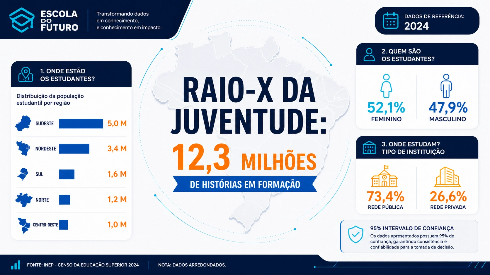
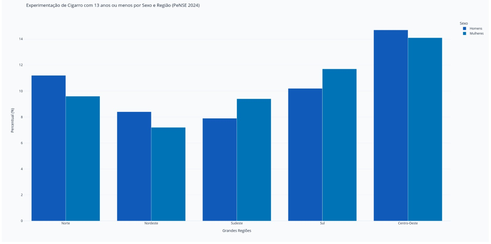
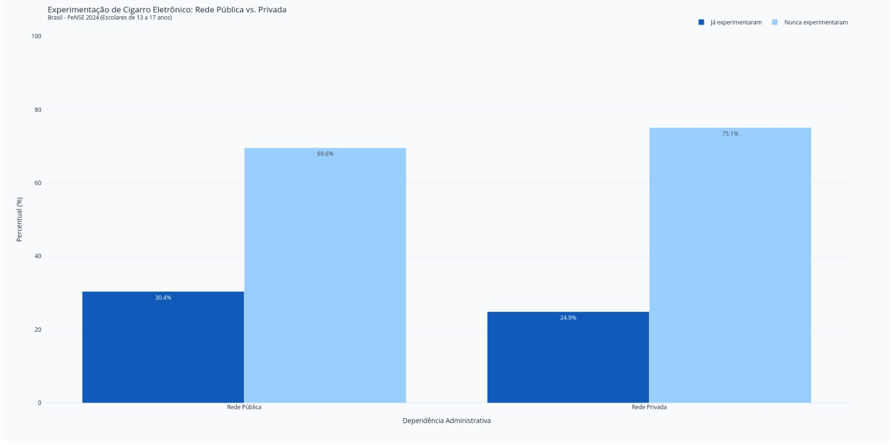
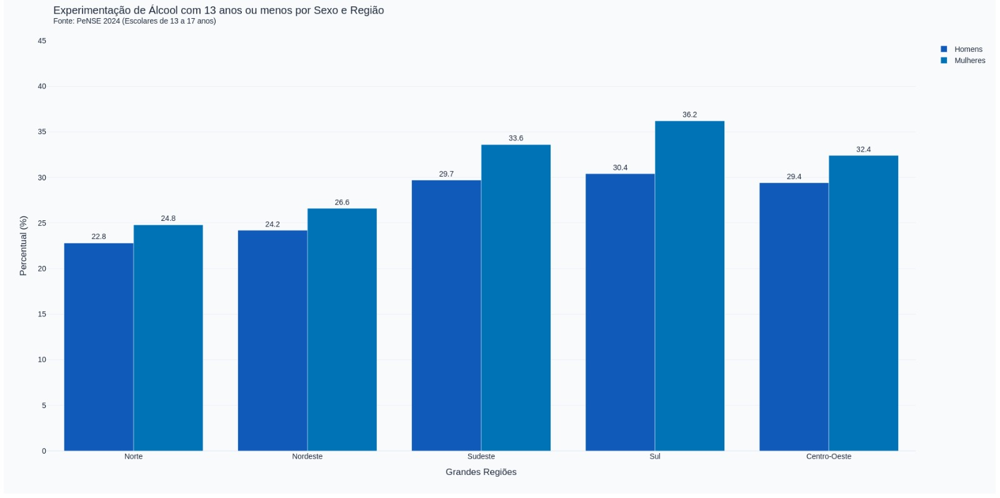
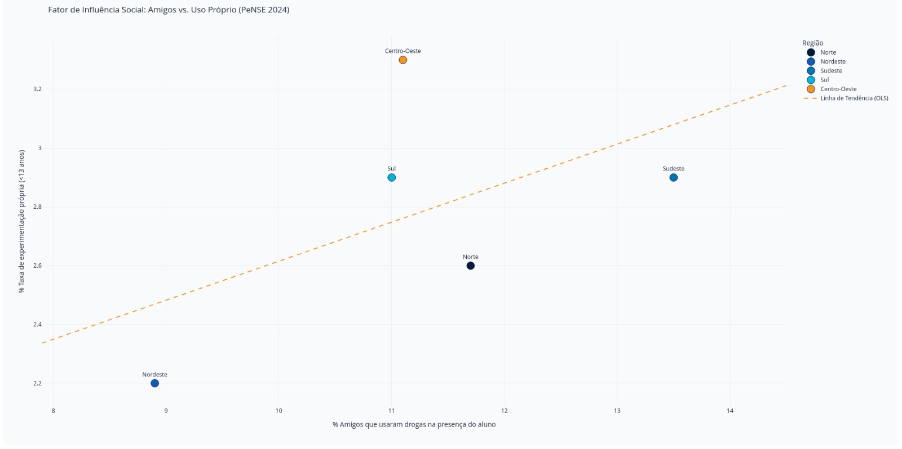
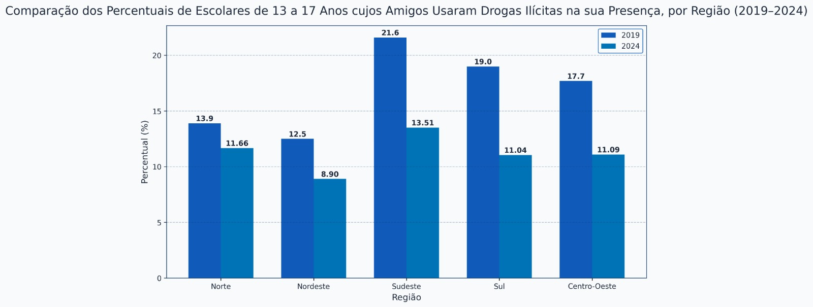
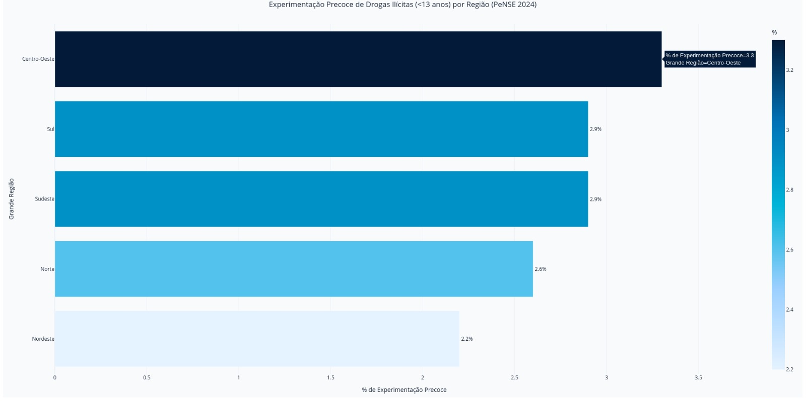
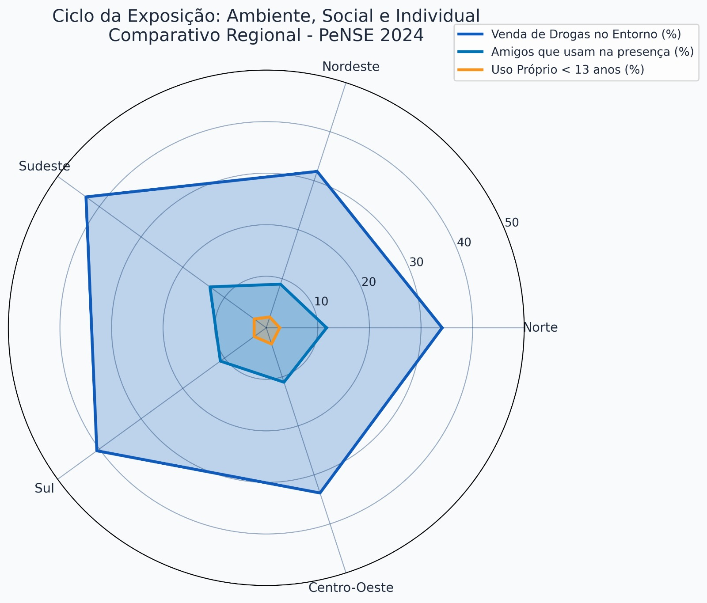
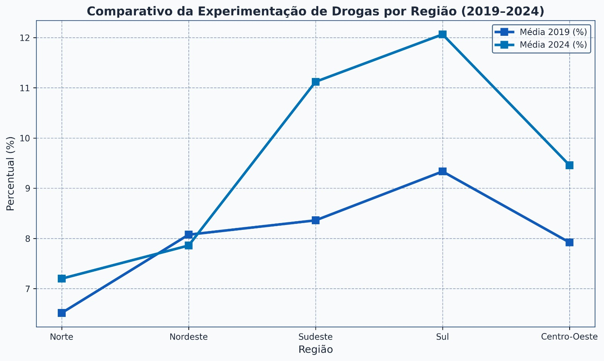

Introdução e Contexto Social
A adolescência é uma fase marcada por transformações biológicas, emocionais e sociais que aumentam a vulnerabilidade a comportamentos de risco.
Vulnerabilidade na Adolescência
É nesse período que jovens estão mais expostos à pressão dos colegas, experimentação de substâncias psicoativas e ambientes violentos.
Por que usar Ciência de Dados?
A análise estatística permite identificar padrões, correlações e tendências que orientam decisões públicas baseadas em evidências.
O que é a PeNSE?
A Pesquisa Nacional de Saúde do Escolar (PeNSE) é realizada pelo IBGE em parceria com o Ministério da Saúde para monitorar fatores de risco e proteção à saúde de adolescentes brasileiros.
Parâmetros da Pesquisa
- Ano de referência: 2019 e 2024
- Faixa etária: 13 a 17 anos
- Escolas públicas e privadas
- Intervalo de confiança: 95%
- Abrangência nacional
Rigor Científico
O intervalo de confiança de 95% garante alta precisão estatística e reduz erros amostrais, tornando os resultados representativos da realidade nacional.

O Alerta da Precocidade


Primeira Dose Antes dos 13

Mulheres no Sul experimentaram álcool antes dos 13 anos
Menor taxa: homens na região Norte
Intervalo de confiança estatístico
Fatores de Influência Social


Análises Estatísticas


Análises Estatísticas

Hipóteses Investigadas
Hipótese 1
A exposição precoce às drogas aumenta a probabilidade de contato com ambientes violentos. Os dados do gráfico radar sustentam a existência desse ciclo: o ambiente permissivo, a pressão dos pares e o uso individual formam camadas progressivas de risco.
Hipótese 2
A influência dos pares desempenha papel central na experimentação de substâncias. A correlação positiva observada no gráfico de dispersão (amigos vs. uso próprio) e a queda paralela nas duas métricas entre 2019–2024 confirmam essa hipótese.
Conclusões
Os dados apontam para a necessidade de ações preventivas precoces, fortalecimento das políticas educacionais e acompanhamento contínuo dos fatores de risco.
Centro-Oeste em Alerta
A região lidera as taxas de experimentação precoce de drogas ilícitas (3,3%) e apresenta a maior correlação entre influência de pares e uso próprio.
Álcool e Gênero
Mulheres superam homens no consumo precoce de álcool em quase todas as regiões, contrariando percepções comuns.
Tendência Positiva
A queda de 2019 para 2024 no índice de amigos que usam drogas sugere que intervenções recentes têm produzido efeito mensurável.
Campanha de Conscientização
Com base nos dados de vulnerabilidade da PeNSE (IBGE), a campanha "Escola do Futuro" utiliza uma comunicação estratégica e preventiva. A seguir, destacamos as três principais características visuais e conceituais dessa ação:
Foco no Protagonismo Juvenil
A campanha substitui o tom proibitivo tradicional por um convite à liderança e à autoconfiança, utilizando imagens de jovens ativos e focados no sucesso para ilustrar que a rejeição às drogas é um ato de autonomia.
Metáfora do Caminho e do Futuro
A campanha utiliza estradas e setas para mostrar que decisões presentes constroem o amanhã. O consumo de drogas é ilustrado como um desvio crítico e perigoso, capaz de tirar o jovem da direção certa e interromper a rota rumo aos seus grandes sonhos.
O Conhecimento como Proteção
O conhecimento e as competências socioemocionais surgem como a armadura do estudante. Ao fortalecer o pensamento crítico e manter a mente livre, a educação atua como um escudo preventivo definitivo que blinda toda a sua trajetória escolar.
Tabelas Utilizadas
| Variável | Tabela PeNSE | Tema | Gráfico |
|---|---|---|---|
| Tabagismo precoce por sexo e região | 5.2.1 | Cigarro Convencional | Gráfico 4 |
| Cigarros eletrônicos | 5.8.1 | Vapes e Pods · Rede pública vs. privada | Gráfico 3 |
| Álcool precoce por sexo e região | 6.2.1 | Primeira dose ≤ 13 anos | Gráfico 7 |
| Drogas ilícitas por região | 7.2.1 | Experimentação precoce | Gráfico 2 |
| Influência de pares 2019–2024 | 7.6.1 | Amigos usuários · Comparativo temporal | Gráficos 1 e 5 |
| Ciclo da Exposição (radar) | 7.2.1 + 7.6.1 | Ambiente, Social e Individual | Gráfico 6 |